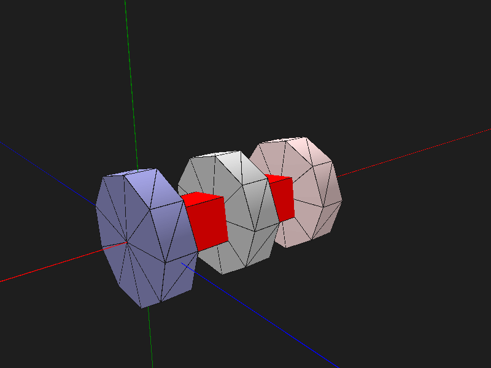
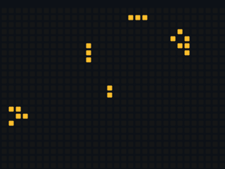
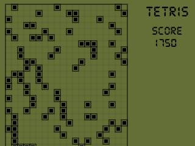

Meus Projetos
My Projects

2D Platformer
This project is a simple 2D platformer, focusing on physics, level design, and character movement.

Flappy Bird
This is a 2D arcade game inspired by Flappy Bird, created using Unity and C#.
2D Ninja Hathodi
This fast-paced action game is centered around a ninja with unique abilities, created using Unity.

Tetris
This platform simulates an old-style version of Tetris, developed with Unity and C#.